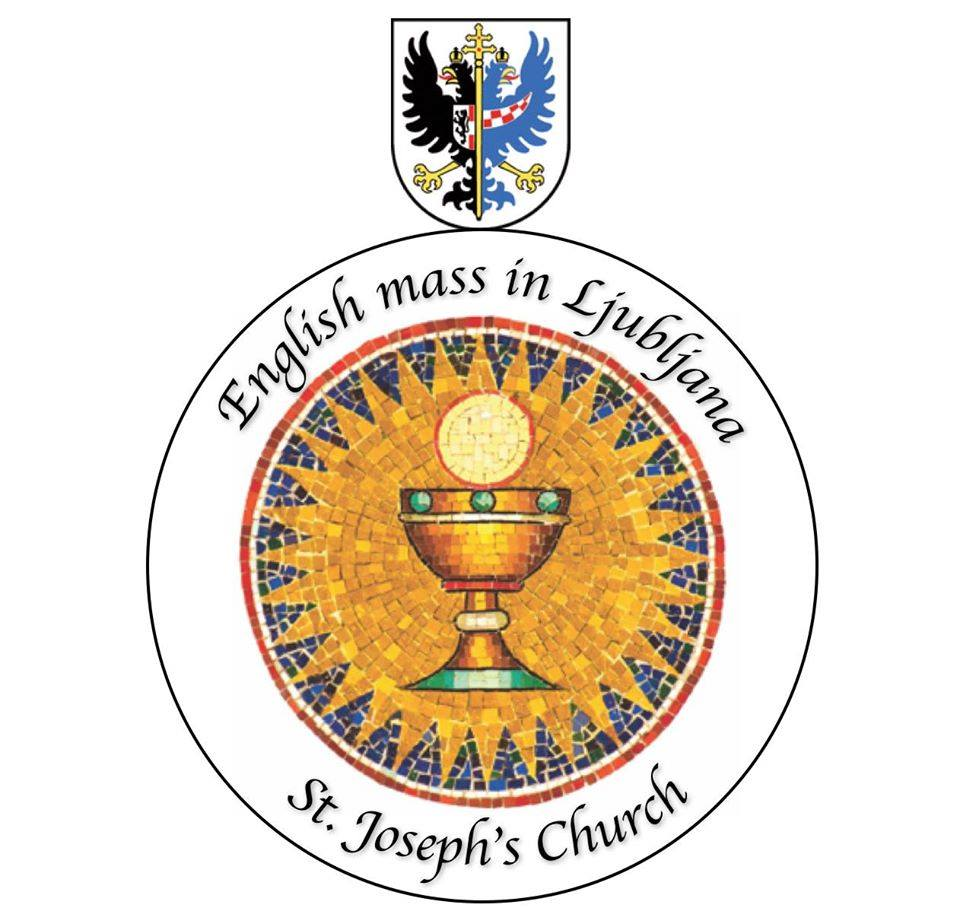

Welcome to the English Mass in Ljubljana. We are a multinational community of English speaking Catholics and other Christians in Ljubljana. Students, families, singles of all ages are warmly welcome. Please share this community with others!
Pastor--Damjan Ristic SJ Mass takes place every Sunday at 10 am in St Mary's chapel located on side of St. Joseph's church
